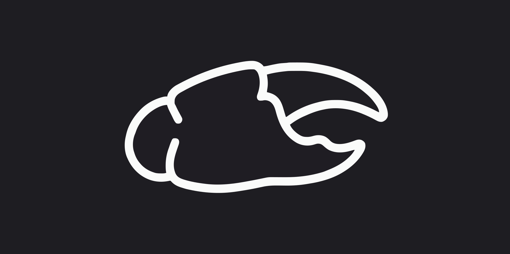

chela is a tiny control plane over a single tmux session. It schedules agents, dispatches a TODO list into pull requests, and streams the whole fleet on one live terminal wall — which you can share, end-to-end encrypted. You walk away; the agents keep working.
# one tmux session whose windows are your agents tmux new-session -d -s chela -n researcher # schedule one, then run the daemon uv run chela schedule add researcher --every 1h --prompt "Run your cycle." uv run chela run
Status: early. The core — scheduler, dispatcher, messaging — is solid and tested; the dashboard + live wall is a first-class, separately-installed feature. chela is self-hosted and single-user: you run it on your own machine, driving one Claude account (the whole fleet shares its 5h / weekly rate limits).
chela is for putting them to work and walking away — and watching them
however you already watch tmux: tmux attach, Mosh, or the live terminal-wall dashboard.
Poke an agent on an interval or cron — every 1h, 0 */8 * * *,
or once at a set time. chela types the prompt into its pane when it fires.
Point chela at a WORKFLOW.md. Each open - [ ] becomes a git
worktree, an agent that implements it, and an opened pull request.
A live grid of every agent's terminal — drag, lock, maximize — with a context-window bar on each tile and 5h / weekly rate-limit pills up top.
Share any agent's live terminal over the internet with a link + a pairing code — full-access (watch, type, scroll), multi-user with live Figma-style cursors and a presence facepile, and mobile-friendly. The relay in the middle only ever sees ciphertext; the keys never leave the browsers.
See how it works →Hand someone a link and a pairing code. They watch, type, and scroll the same session in their browser — everyone sees everyone as live cursors — and the relay in the middle only ever sees ciphertext. chela is web-first collaboration, over the public internet.
Click Share on any pane. The code is the key — 16 random bytes both browsers turn into AES-256-GCM keys with HKDF, in-browser. A wrong code simply can't decrypt.
A dumb WebSocket fan-out that broadcasts opaque frames — it never holds a key, and sees metadata only. Run your own (a small Cloudflare Worker) so even that stays yours.
Live labeled cursors mapped to the grid, plus a facepile of who's watching (the host gets a ★). Presence rides the same encryption — colorblind-safe, names not just colors.
Phone joiners get an on-screen keys-line, swipe-to-scroll, and touch cursors. Stop a share and the room dies + the code rotates; a topbar kill-switch stops everything at once.
The live terminal wall streams every agent's pane into one grid — and the dashboard tracks each agent's context, cost, schedule, and liveness at a glance.
Discovery is tmux list-windows + pane_current_path — no
external state file, no daemon to coordinate with. tmux never lies about what's live.
Each window of your session is an agent; the window name is its display name. Schedules and messages target it by name.
Every task runs in its own worktree on branch <project>-<n>,
opens a PR, and auto-closes when you merge — many tasks in flight at once.
The dashboard binds loopback; put it behind a tailnet or SSH tunnel. The live wall is on
by default but only served on a loopback bind (it's a writable shell). Or skip the UI
entirely and tmux attach from a phone over Mosh.
Python ≥ 3.11, tmux, git, and the claude CLI.
The core is two small deps; the dashboard + live wall ship as a separate install to keep the core lean.
# core git clone https://github.com/Devail1/chelamux && cd chelamux uv sync uv run chela status # dashboard + live terminal wall (separate install — keeps the core lean) uv sync --extra dashboard uv run chela dashboard
Full setup, the WORKFLOW.md format, the CLI, and config live in the
documentation.